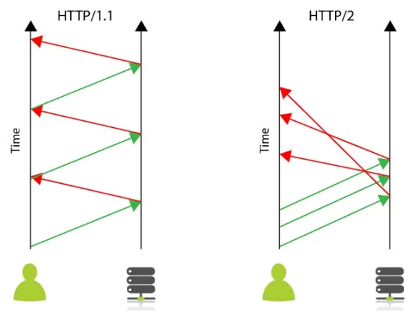
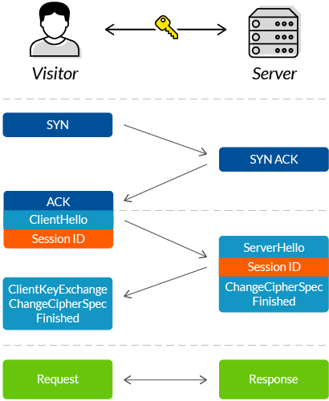
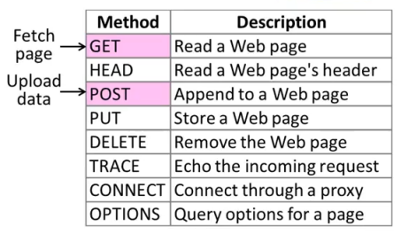
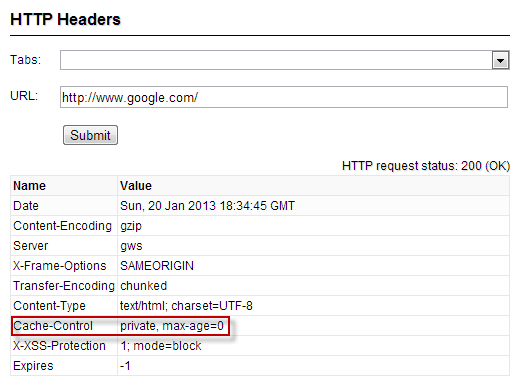
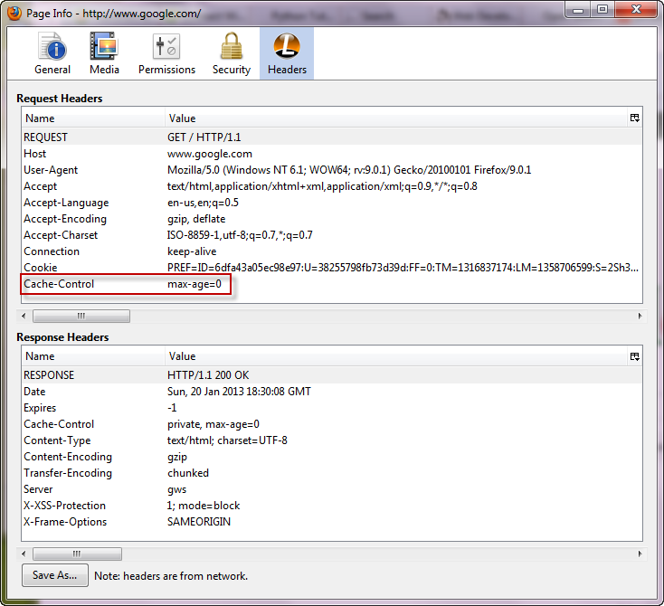
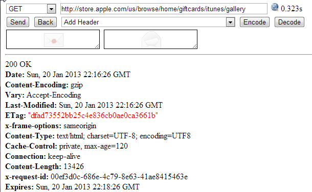
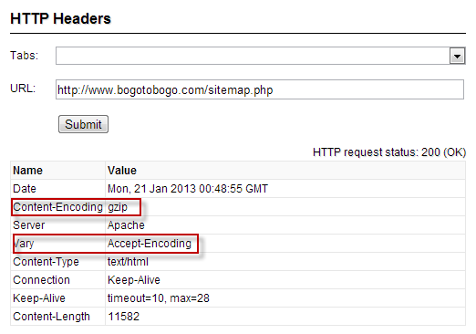
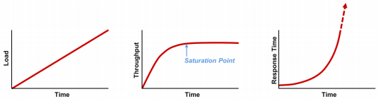

DevOps / Sys Admin Q & A #7 : Web server
A client machine (our computer) initiates a request for a web page by sending the request to a server. A server is a computer where web sites reside. When we type a web address into our browser, a server receives our request, finds the web page we want, and sends it back to our computer to be displayed in our web browser.
Actually, before a browser sending a request to a server, client (machine) running browser asks DNS server using UDP protocol for A record of www.google.com.
- On client, it is the OS that does resolving part and talks back to browser, browser never talks to a DNS server directly, rather through OS by invoking gethostbyname() or newer getaddrinfo(). On Windows the order in which OS does resolving of addresses is likely defined by something like this, and on Linux resolving precedence is defined by /etc/nsswitch.conf.
- The DNS server responds to client with record/IP address (using UDP) if it exists.
- The client opens TCP connection to port 80 of the Web server and writes following text:
GET / HTTP/1.1 Host: www.google.com
We can see the process via wget:
$ wget http://google.com ... Resolving www.google.com (www.google.com)... 2607:f8b0:4007:808::2004, 216.58.217.196 Connecting to www.google.com (www.google.com)|2607:f8b0:4007:808::2004|:80... connected. HTTP request sent, awaiting response... 200 OK Length: unspecified [text/html] Saving to: 'index.html' ...
We can see what happened during the http request initiated by the client on the server side by capturing all network traffic using tcpdump.
tcpdump is a most powerful and widely used command-line packets sniffer or package analyzer tool which is used to capture or filter TCP/IP packets that received or transferred over a network on a specific interface.
$ sudo tcpdump -s 0 -A -i lo 'tcp port 80' tcpdump: verbose output suppressed, use -v or -vv for full protocol decode listening on lo, link-type EN10MB (Ethernet), capture size 65535 bytes 19:00:00.016136 IP localhost.47164 > localhost.http: Flags [S], seq 647551901, win 43690, options [mss 65495,sackOK,TS val 4972190 ecr 0,nop,wscale 7], length 0 E..<..@.@.7..........<.P&............0......... .K.......... 19:00:00.016213 IP localhost.http > localhost.47164: Flags [R.], seq 0, ack 647551902, win 0, length 0 E..(..@.@.W..........P.<....&...P.... .. 19:00:00.426040 IP localhost.47165 > localhost.http: Flags [S], seq 644277834, win 43690, options [mss 65495,sackOK,TS val 4972293 ecr 0,nop,wscale 7], length 0 E..<9O@.@..k.........=.P&f.J.........0.........; .K.......... 19:00:00.426098 IP localhost.http > localhost.47165: Flags [R.], seq 0, ack 644277835, win 0, length 0 E..(..@.@.W..........P.=....&f.KP.......;
Here are the things happening when a client initiated a request:
- Get ip from url. (dns)
- Establishing a TCP connection to the server by the client (TCP Three way handshake).
- Client => Server : SYN
- Server => Client : SYN/ACK
- Client => Server : ACK
- Initiating a HTTP GET request by the client to the server.
- HTTP server response to a HTTP GET request.
HTTP/2 is one of the largest changes to how the web works since HTTP v1.1 was released in June 1999. The new HTTP/2 protocol will make web pages load significantly faster, both on the desktop and mobile.
HTTP/2 is the next version of HTTP and is based on Google's SPDY Protocol, which was implemented to speed up the loading of web pages. It is a new standard and is already starting to take over from the current protocol HTTP1.1 still used by the majority of websites.
The HTTP/2 specification was published as RFC 7540 in May 2015. According to W3Techs, as of January 2017, 12.7% of the top 10 million websites supported HTTP/2.
With modern websites often requiring over 100 connections, it is not difficult to see that the responsiveness of the website can suffer. This is further exacerbated by a problem called "head-of-line blocking" that means before a subsequent request can be made the results of the first request must have been received.With the new Protocol, the user can send multiple requests, but the browser can receive them in any order. By eliminating head-of-line blocking, the website can be loaded much more quickly.
Credit - What is HTTP/2 and How Does it Compare to HTTP/1.1?
HTTP2 decreases latency to improve page load speed in web browsers by:
- Multiplexing multiple requests over a single TCP connection.
- Data compression of HTTP headers.
- Fixing the head-of-line blocking problem in HTTP 1.x.
SSL/TLS are protocols used for encrypting information between two points.
The following is a standard SSL handshake when RSA key exchange algorithm is used (How does SSL work? What is an SSL handshake?):
- Client Hello:
- Information that the server needs to communicate with the client using SSL.
- Including SSL version number, cipher settings, session-specific data. - Server Hello:
- Information that the client needs to communicate with the server using SSL.
- Including SSL version number, cipher settings, session-specific data.
- Including Server's Certificate (Public Key) - Authentication and Pre-Master Secret:
- Client authenticates the server certificate. (e.g. Common Name / Date / Issuer)
- Client (depending on the cipher) creates the pre-master secret for the session,
- Encrypts with the server's public key and sends the encrypted pre-master secret to the server. - Decryption and Master Secret:
- Server uses its private key to decrypt the pre-master secret,
- Both Server and Client perform steps to generate the master secret with the agreed cipher. - Generate Session Keys:
- Both the client and the server use the master secret to generate the session keys, which are symmetric keys used to encrypt and decrypt information exchanged during the SSL session - Encryption with Session Key:
- Both client and server exchange messages to inform that future messages will be encrypted.
It's really important to understand the details of the HTTP protocol in order to build and debug effective web services. The HTTP protocol is always organized around a client sending a request to the server. We have our server and our client, and we have a request that's being sent. Now, one of the key parts of that request is the action that the client is asking the server to take on its behalf. Therefore, every request has a request method which is the action or the verb that the client is asking the server to take on its behalf. All requests are dictated as a request method that should be applied to a specific resource on the server.
For example, when we go and access a webpage, using our browser, what we're typically doing is sending a request that has the get request method, and the resource is usually a webpage such as 'index.html', which is usually the core webpage at a website. In this case, the get is the request method, and the resource is the 'index.html'.
The resource is typically specified as a path to a resource on the server. So, the resource will typically be a path. We'll see something like this, '/index.html' or 'foo/mypage' or some other resource that we would like to access.
There's a variety of request methods in http protocol. One of the most important ones that we want to understand is GET which is a simple request to the server. It can be without data or possibly include a little bit of data and it's asking the server to get some resource that's there and return it to us.
Another important one is POST. POST is typically used when we want to send a lot of data to the server. So, for example, if we want to go and Post an image to the server so that it can then store and serve up at some later point in time. Post is probably something we will be using to do that. We probably aren't going to be sending an image through get. We're going to be sending some small amount of data through Get.
Post is used for more general purpose such as sending data to the server.

If we want to get data from the server, use http GET.
So, when we typed in the following in the url:
http://www.bogotobogo.com/foo
Internally, we're issuing the following request line requesting a page from a http server:
GET /foo http/1.1
- GET - method
- /foo - path
- http/1.1 - version
Here is another example a little bit more complicated, and guess what would be the request line:
http://www.bogotobogo.com/foo/bogo.png?p=python#fragment
The answer is:
GET /foo/bogo.png?p=python http/1.1
The host www.bogotobogo.com will be used for connection, and the fragment stays at the client side.
Actually, the http request line has more, called header which consists of name: value pair:
Host: www.bogotobogo.com User-Agent: Chrome
Though we made a connection already, we need the Host because a web server may be hosting several domains.
If we want to send new data to the server, use http POST. Some more advanced http web service APIs also allow creating, modifying, and deleting data, using http PUT and http DELETE. That's it. No registries, no envelopes, no wrappers, no tunneling. The verbs built into the http protocol (GET, POST, PUT, and DELETE) map directly to application-level operations for retrieving, creating, modifying, and deleting data.
The main advantage of this approach is simplicity, and its simplicity has proven popular. Data - usually xml or json - can be built and stored statically, or generated dynamically by a server-side script, and all major programming languages (including Python, of course!) include an http library for downloading it. Debugging is also easier; because each resource in an http web service has a unique address (in the form of a url), we can load it in our web browser and immediately see the raw data. - from http://getpython3.com/diveintopython3/http-web-services.html
To the folowing http request:
GET /foo http/1.1
The server's response should something like this;
http/1.1 200 OK
The line is called status line:
- 200: status code
- OK: reason phrase
Here are some of the status codes:
| Status | Meaning | Example |
|---|---|---|
| 1xx | Information | 100 = server agrees to handle client's request |
| 2xx | Success(OK) | 200 = request succeeded, 204 = no content present |
| 3xx | Redirection | 301 = page moved, 304 = cached page still valid |
| 4xx | Client error | 403 = forbidden page, 404 = page not found |
| 5xx | Server error | 500 = internal server error, 503 = try again later |
The header has more components, and we will see them later in this page.
There are five important features which all http clients should support.
Network access is incredibly expensive!
The most important thing to realize that any type of web service is that network access is incredibly expensive. It takes an extraordinary long time to open a connection, send a request, and retrieve a response from a remote server. Even on the fastest broadband connection, a latency can still be higher than we anticipated. A router misbehaves, a packet is dropped, an intermediate proxy is under attack, and so on.
http is designed with caching in mind. There is an entire class of devices called caching proxies whose only job is to sit between us and the rest of the world and minimize network access. Our company or ISP almost certainly maintains caching proxies, even if we're not aware of them. They work because caching is built into the http protocol.
Chrome
After installing chrome-extension-http-headers
we can get header http header info:
Firefox
Install Firefox Web Developer Add-Ons
Page Informatiton->Headers
Caching speeds up repeated page views and saves a lot of traffic by preventing downloading of unchanged content on every page view. We can use Cache-Control: max-age= to inform browser that the component won't be changed for defined period. This way we avoid unneeded further requests if browser already has the component in its cache and therefore primed-cache page views will be performed faster.
After installing the HTTP Response Browser, we can see the response to our request.
The following example shows the response to the request of an image.
We visit http://www.bogotobogo.com/python/images/python_http_web_services/Browsers.png in our browser. That page includes an image. When our browser downloads that image, the server includes the following http headers:
Unfortunately, my site does not have cache-control/Expires. So, let's look at another site:

The Cache-Control and Expires headers tell our browser (and any caching proxies between us and the server) that this image can be cached for up to 2 minutes (from Sun, 20 Jan 2013 22:16:26 GMT to Sun, 20 Jan 2013 22:18:26 GMT). And if, within that period, we visit the page, our browser will load the page from its cache without generating any network activity whatsoever.
But let's suppose, we're trying to download an image and we have about a month before it expires. And our browser purges the image from our local cache for some reason. But the http headers said that this data could be cached by public caching proxies. (Technically, the important thing is what the headers don't say; the Cache-Control header doesn't have the private keyword, so this data is cacheable by default.) Caching proxies are designed to have tons of storage space, probably far more than our local browser has allocated.
If our ISP maintain a caching proxy, the proxy may still have the image cached. When we visit the site again, our browser will look in its local cache for the image, but it won't find it, so it will make a network request to try to download it from the remote server. But if the caching proxy still has a copy of the image, it will intercept that request and serve the image from its cache. That means that our request will never reach the remote server; in fact, it will never leave our ISP's network. That makes for a faster download (fewer network hops).
http caching only works when everybody does their part. On one side, servers need to send the correct headers in their response. On the other side, clients need to understand and respect those headers before they request the same data twice. The proxies in the middle are not a panacea; they can only be as smart as the servers and clients allow them to be.
Some data never changes, while other data changes all the time. For example, *.com's feed is updated every few minutes, but site's feed may not change for days or weeks at a time. In the latter case, I don't want to tell clients to cache my feed for weeks at a time, because then when I do actually post something, people may not read it for weeks (because they're respecting my cache headers which said don't bother checking this feed for weeks). On the other hand, I don't want clients downloading my entire feed once an hour if it hasn't changed!
http has a solution to this, too. When we request data for the first time, the server can send back a Last-Modified header. This is exactly what it sounds like: the date that the data was changed.
When we request the same data a second (or third or fourth) time, we can send an If-Modified-Since header with our request, with the date we got back from the server last time. If the data has changed since then, then the server gives us the new data with a 200 status code. But if the data hasn't changed since then, the server sends back a special http 304 status code, which means this data hasn't changed since the last time you asked for it. We can test this on the command line, using cURL:
$ curl -I -H "If-Modified-Since: Sun, 20 Jan 2013 19:56:58 GMT" http://www.bogotobogo.com/python/images/python_http_web_services/Browsers.png HTTP/1.1 304 Not Modified Date: Sun, 20 Jan 2013 23:21:23 GMT Server: Apache ETag: "664002c-2f09-4d3bdbf48a672" Vary: Accept-Encoding
This is an improvement because when the server sends a 304, it doesn't re-send the data. All we get is the status code. Even after our cached copy has expired, last-modified checking ensures that we won't download the same data twice if it hasn't changed. (Actually, this 304 response also includes caching headers. Proxies will keep a copy of data even after it officially expires, in the hopes that the data hasn't really changed and the next request responds with a 304 status code and updated cache information.)
Python's http libraries do not support last-modified date checking, but httplib2 does.
An ETag or entity tag, is part of HTTP and it is one of the several mechanisms that HTTP provides for web cache validation, and which allows a client to make conditional requests. This allows caches to be more efficient, and saves bandwidth, as a web server does not need to send a full response if the content has not changed. - from wiki
ETags are an alternate way to accomplish the same thing as the last-modified checking. With ETags, the server sends a hash code in an ETag header along with the data we requested.
200 OK Date: Mon, 21 Jan 2013 00:07:51 GMT Content-Encoding: gzip Last-Modified: Sun, 20 Jan 2013 19:56:58 GMT Server: Apache ETag: "664002c-2f09-4d3bdbf48a672" Vary: Accept-Encoding Content-Type: image/png Accept-Ranges: bytes Content-Length: 12054
The second time we request the same data, we include the ETag hash in an If-None-Match header of our request. If the data hasn't changed, the server will send us back a 304 status code. As with the last-modified date checking, the server sends back only the 304 status code; it doesn't send us the same data a second time. By including the ETag hash in our second request, we're telling the server that there's no need to re-send the same data if it still matches this hash, since we still have the data from the last time.
$ curl -I -H "If-None-Match: \"664002c-2f09-4d3bdbf48a672\"" http://www.bogotobogo.com/python/images/python_http_web_services/Browsers.png HTTP/1.1 304 Not Modified Date: Mon, 21 Jan 2013 00:14:50 GMT Server: Apache ETag: "664002c-2f09-4d3bdbf48a672" Vary: Accept-Encoding
Note that ETags are commonly enclosed in quotation marks, but the quotation marks are part of the value. That means we need to send the quotation marks back to the server in the If-None-Match header.
Python's http libraries do not support Etags, but httplib2 does.
When we talk about http web services, we're almost always talking about moving text-based data back and forth over the wire. It could be xml, json, or it could be just plain text. Regardless of the format, text compresses well. The example feed in the XML chapter is 25K bytes uncompressed, but would be 6K bytes after gzip compression. That's just 25% of the original size!
http supports several compression algorithms. The two most common types are gzip and deflate. When we request a resource over http, we can ask the server to send it in compressed format. We include an Accept-encoding header in our request that lists which compression algorithms we support. If the server supports any of the same algorithms, it will send us back compressed data (with a Content-encoding header that tells us which algorithm it used). Then it's up to us to decompress the data.

Python's http libraries do not support compressions, but httplib2 does.
Web sites are keep changing. Even web services can reorganize and even the domain might move. Every time we request any kind of resource from an http server, the server includes a status code in its response:
- 200: everything's normal
- 404: page not found
- 300: redirection
http has several different ways of signifying that a resource has moved. The two most common techiques are status codes 302 and 301.
- 302: a temporary redirect; it means oops, that got moved over here temporarily, and then gives the temporary address in a Location header.
If we get a 302 status code and a new address, the http specification says we should use the new address to get what we asked for, but the next time we want to access the same resource, we should retry the old address. - 301: a permanent redirect; it means oops, that got moved permanently, and then gives the new address in a Location header.
if we get a 301 status code and a new address, we're supposed to use the new address from then on.
The urllib.request module automatically follow redirects when it receives the appropriate status code from the http server, but it doesn't tell us that it did so. We'll end up getting data we asked for, but we'll never know that the underlying library helpfully followed a redirect for us. So we'll continue pounding away at the old address, and each time we'll get redirected to the new address, and each time the urllib.request module will helpfully follow the redirect. In other words, it treats permanent redirects the same as temporary redirects. That means two round trips instead of one, which is bad for the server and bad for us.
compressions, but httplib2 handles permanent redirects for us. Not only will it tell us that a permanent redirect occurred, it will keep track of them locally and automatically rewrite redirected urls before requesting them.
Telnet can be used for troubleshooting connection issues. It attempts to connect to a server on a given port. Generally we can quickly check if a remote server is "listening" on http port.
HEAD and GET are the most common options. HEAD will return information about the requested file/page, but not the content. GET will retrieve both the Header information as well as the content, terminated with 0.
Following the HEAD/GET command we need to specify HTTP/1.1. Then, on the next line, we may want to specify the Host domain name. HTTP/1.1 allows for multiple domains to be hosted at a single IP address so this is important. The User-Agent and other options can be specified on subsequent lines.
Input:
$ telnet example.com 80 Trying 2606:2800:220:1:248:1893:25c8:1946... Connected to example.com. Escape character is '^]'. GET / HTTP/1.1 Host: www.example.com
Output:
HTTP/1.1 200 OK
Accept-Ranges: bytes
Cache-Control: max-age=604800
Content-Type: text/html
Date: Thu, 22 Oct 2015 02:07:54 GMT
Etag: "359670651"
Expires: Thu, 29 Oct 2015 02:07:54 GMT
Last-Modified: Fri, 09 Aug 2013 23:54:35 GMT
Server: ECS (sjc/4E39)
X-Cache: HIT
x-ec-custom-error: 1
Content-Length: 1270
<?xml version="1.0" encoding="iso-8859-1"?>
<!DOCTYPE html PUBLIC "-//W3C//DTD XHTML 1.0 Transitional//EN"
"http://www.w3.org/TR/xhtml1/DTD/xhtml1-transitional.dtd">
<html xmlns="http://www.w3.org/1999/xhtml" xml:lang="en" lang="en">
<head>
<title>400 - Bad Request</title>
</head>
<body>
<h1>400 - Bad Request</h1>
</body>
</html>
Connection closed by foreign host.
Just for header:
Input:
$ telnet example.com 80 Trying 2606:2800:220:1:248:1893:25c8:1946... Connected to example.com. Escape character is '^]'. HEAD / HTTP/1.1 HOST: www.example.com
Output:
HTTP/1.1 200 OK Accept-Ranges: bytes Cache-Control: max-age=604800 Content-Type: text/html Date: Thu, 22 Oct 2015 02:11:34 GMT Etag: "359670651" Expires: Thu, 29 Oct 2015 02:11:34 GMT Last-Modified: Fri, 09 Aug 2013 23:54:35 GMT Server: ECS (sjc/4FB8) X-Cache: HIT x-ec-custom-error: 1 Content-Length: 1270
- Log files:
Log files are in /var/log in a sub-folder specific to the service. For example, Ubuntu Apache server, we can find the logs in /var/log/apache2. Though the error message we may get from a web page can give us some clues, the error messages from the lines in the log files(such as error.log) are more specific.
The server error log is the most important log file. This is the place where Apache httpd will send diagnostic information and record any errors that it encounters in processing requests. It is the first place to look when a problem occurs with starting the server or with the operation of the server, since it will often contain details of what went wrong and how to fix it.
For more on Apache log file - Log Files - Is server running?:
$ sudo netstat -plnt | grep apache2 tcp6 0 0 :::80 :::* LISTEN 1286/apache2
where the options represent p(program)/l(listen)/n(numeric)/t(tcp).
This netstat tells us all of the processes that are using ports on the server. We can then grep for the name of the process we are looking for. We should see "apache2" web server process. Otherwise, we should start the server:$ sudo service apache2 start
On CentOS:
$ sudo /etc/init.d/httpd start
- Configuration files:
If our web server won't start, we need to look at configuration files in /etc/apache2 or /etc/httpd. To check the configuration syntax:$ apache2ctl configtest Syntax OK
For Nginx:
$ sudo nginx -t
- Is port opened?:
Web servers run on port 80/443, and these ports must be accessible. We can use netcat/nc command:$ netcat -z 54.183.114.189 80
where the z to indicate just listening not actually sending any data. If the port is open, the command will return right away. If it is not open, the command will continuously try to form a connection, unsuccessfully. If port is not accessible, we should look at our firewall configuration. - DNS setting:
Check if the DNS is properly configured and see if there's any potential problems. If we can reach our site through the IP address, but not through the domain name, we may want to check our DNS settings. In order for visitors to reach our site through its domain name, we should have an A or AAAA(IPv6) record pointing to our server's IP address in the DNS settings. We can query for our domain's A record by host command with t(ype) A option:$ host -t A 54.183.114.189 189.114.183.54.in-addr.arpa domain name pointer ec2-54-183-114-189.us-west-1.compute.amazonaws.com
Note that we need to wait for a while since any changes we made to the DNS records take time to propagate. - Server name, Document Root, or index file:
We need to check if Server name, Document Root, or index file in Apache virtual host / Nginx server block files are set correctly
For Apache:<VirtualHost *:80> ServerName example.com ServerAlias www.example.com ServerAdmin admin@example.com DocumentRoot /var/www/html
For Nginx:server { listen 80 default_server; listen [::]:80 default_server ipv6only=on; root /usr/share/nginx/html; index index.html index.htm; server_name example.com www.example.com;
- Is DB running?:
$ mysql -u DB_USER -pDB_PASSWORD DB_NAME
TTL (Time-to-live) is the value that determines how long our current DNS settings are cached.
Shorter TTLs can cause heavier loads on a name server, but can be useful when changing the address of critical services like Web servers or MX records, and therefore are often lowered by the DNS administrator prior to a service being moved, in order to minimize disruptions.
The units used are seconds. An older common TTL value for DNS was 86400 seconds, which is 24 hours. A TTL value of 86400 would mean that, if a DNS record was changed on the authoritative nameserver, DNS servers around the world could still be showing the old value from their cache for up to 24 hours after the change.
Newer DNS methods that are part of a DR (Disaster Recovery) system may have some records deliberately set extremely low on TTL. For example a 300 second TTL would help key records expire in 5 minutes to help ensure these records are flushed quickly worldwide. This gives administrators the ability to edit and update records in a timely manner. TTL values are "per record" and setting this value on specific records is sometimes honored automatically by all standard DNS systems worldwide. However a problem persists in that many caching DNS nameservers set their own TTLs regardless of the authoritative records, so it cannot be guaranteed that all downstream DNS servers have the new records after the TTL has expired.
- from wiki : Time to live
What does "performance" mean to you?
In order to adequately troubleshoot performance issues, we need to understand the relationship between load, throughput, and response time.
Load is where it all begins. It is the demand for work to be done. Without it, you have no work and, therefore, no response time. This is also what causes performance to ultimately degrade. At some point, there is a greater demand for work than the application is capable of delivering, which is when bottlenecks occur.
Throughput is the execution rate of the work being demanded. The relationship between load and throughput is predictable. As load increases, throughput will also increase until some resource gets saturated, after which throughput will "plateau." When throughput plateaus, it's an indicator our application no longer scales.
Response time is the side effect of throughput. While throughput is increasing proportionately to load, response time will increase negligibly, but once the throughput plateau is reached, response time will increase exponentially with the telltale "hockey stick" curve as queuing occurs:
Some of the links:
- Hidden in Plain Sight: Practical Tips for Detecting and Fixing the Underlying Causes of Common Application Performance Problems
- Five Root-Cause Reasons Your Applications Are Slow
- Applications running slow? The root cause might come as a surprise
- The Top 3 Reasons an Application Hangs
- Finding the Root Cause of Application Performance Issues in Production
Ph.D. / Golden Gate Ave, San Francisco / Seoul National Univ / Carnegie Mellon / UC Berkeley / DevOps / Deep Learning / Visualization